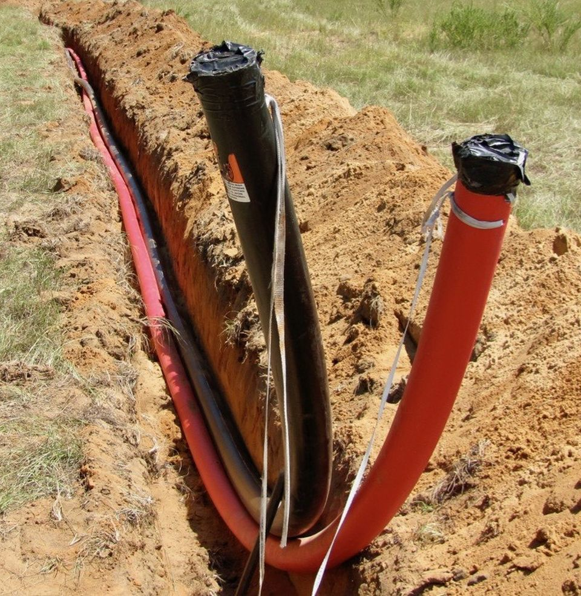

can design, install and maintain voice and data cabling systems, while providing products and services such as switches, telephones, paging, voicemail, etc.
For all telecommunication system needs throughout California. Irish Construction Company
focuses on underground communication and power conduit systems, as well as rodding and conduit verification, trenching and paving.

Irish Communication Company can design, install and maintain voice and data cabling systems,
while providing products and services such as switches, telephones, paging, voicemail, etc.
for all telecommunication system needs throughout California.

Irish Construction Company focuses on underground communication and power conduit systems, as well as rodding and conduit verification, trenching and paving.

ICC can implement fiber optic cable systems of any size and fiber type available today.
ICC owns the highest quality equipment and employs industry trained and certified technicians to offer the following fiber optic services:
Manufacturer certified installations from AVAYA/Commscope, Corning,
Sumitomo Futureflex and others (see partners page)
62.5/125, 50/125 Multimode and 8.3/125 Singlemode systems
System installation for campus, riser and FTTD applications
Sub-duct installation in conduit systems and building environments
Fusion splicing using 100% ICC owned splicing equipment
OTDR and power meter testing using the latest equipment available
Complete documentation and test data provided for all completed installations
AutoCAD drawings of complete system with splice points, termination locations and patch panel detail can be provided
Statewide coverage for consistent installations throughout California
ICC employs a staff of engineers and drafting professionals to design customer solutions in the public right of way and throughout customer premises.
ICC offers full service engineering for the following project needs:
Right of way and easements planning
Permit drawings and coordination with local government agencies
Complete underground and aerial route design
Wind loading and pole loading calculations
Campus wide system design
Complete inside plant design with RCDD certified personnel
Feasibility studies and field surveying of existing conduit systems
JPA fielding and documentation
Surveying
Seamless integration with other ICC departments
Cable designs reviewed by on staff BICSI RCDD
Statewide coverage for consistent quality of deliverables on large projects
ICC has the necessary equipment and manpower to implement any size project in either the aerial or underground environment.
ICC has been recognized as an industry leader in offering the following outside plant services:
Aerial placement of copper, fiber optic and coaxial cable
Pole setting and support systems
Underground placement of copper, fiber optic and coaxial cable
Emergency repair work for disaster recovery
Public right of way, campus wide and building backbone system installation
Underground pathway, location, verification and cleaning
All installations use the proper equipment to minimize cable stress and possible damage
All equipment 100% owned and maintained by ICC mechanics
All technicians are trained and highly skilled in all facets of outside plant systems
Statewide coverage for large scale implementations
ICC offers electrical systems installation for moves adds and changes to existing systems and select new installations.
ICC can integrate our electrical services with our communications services to provide complete and seamless integration on projects.
We offer electrical services if the following areas:
Select new TI projects in owned facilities and leased space
Moves, adds and changes to existing facilities
UPS system installation complete with sub-panels and circuit distribution
Electrical conduit systems and supporting hardware
Complete surface pathway installation for electrical and communication systems
Redistribution of and upgrades to existing systems
All installation work completed by licensed electrician
All equipment 100% owned and maintained by ICC mechanics
All technicians are trained and highly skilled in all facets of outside plant systems
Statewide coverage for large scale implementations
ICC offers design and installation of the latest technology in voice and converged applications.
ICC can implement traditional PBX and Voice Over IP technologies.
ICC provides design and support for all voice applications, which are quality assured before proposals are presented.
We can provide AVAYA solutions as a Diamond Dealer Business Partner. Our service offerings are as follows:
AVAYA Communication Manager, Servers and Gateway Systems
Merlin Magix and Partner Systems for medium and small networks
IP Office and converged network solutions
Wireless voice systems
All systems designed by certified AVAYA engineers
Each system is tailored to meet specific customer requirements
Cost saving upgrades to existing systems
Full training on new systems provided by experienced AVAYA trainers
Statewide coverage for large networked system cutovers
ICC offers design and installation of the latest technology for data network applications.
ICC can implement traditional data network technology and wireless systems.
ICC provides design and support for all wireless and wired LAN systems, which are quality assured to meet your specifications.
We can provide AVAYA solutions as well as other manufacturer solutions.
Our service offerings are as follows:
Converged voice and data network solutions
Wireless LAN design and installation services
Each system is tailored to meet specific customer requirements
Wired data network solutions
Statewide coverage for large networked system cutovers
ICC offers manufacture warranted systems for Category 5e and Category 6 solutions. ICC can offer solutions for any type or size of cabling network. Our staff can assist you in the following areas:
Certified systems from AVAYA, Corning, Panduit, Leviton and others (see partners page)
All installations conform to TIA/EIA, BICSI and other industry standards
Large multistory buildings and campus environments
New installations as well as seamless installation in existing working environments
Industry trained and certified technicians
Every proposal is reviewed by an on staff RCDD for quality assurance
CATV, coaxial network and other low voltage system installation
Cable system testing and verification using only the latest standards complainant electronic scanners available
Statewide coverage for consistent installations throughout California
ICC offers copper cable splicing services for regulated customers and for private customer networks. All ICC splicers are industry trained and experienced in all facets outside plant and interior cable splicing techniques. ICC can offer the services for all of your cable splicing needs:
Identification and verification of existing cable plant (spares, workers, defective)
Development of cable records and splice detail for existing cable plant
Proper outdoor splicing of large cable counts in manholes and aerial environments
Splicing and proper distribution of riser systems for high-rise buildings
Work in public right of way as well as on customer premises
Installation copper protection systems for protecting customer provided equipment and for safety concerns
Repair and maintenance of existing cable plant
Emergency call out for repairs due to weather and other service outages
Capable of Central Office rebuilds and cutover work
Statewide coverage for long systems cutovers and cable plant builds
ICC specializes in the installation of CATV systems for regulated utility and private network customers. Our service offerings in CATV design and installation are as follows:
Aerial and underground power supplies design and installation
Aerial and underground Coaxial and fiber optic cable placement
New construction or retrofits of existing plant
Complete engineering with permits and drawings
ICC engineers and superintendents will coordinate with all utilities and municipalities
ICC's power supply and cable installation team assures a smooth and timely installation for your activation team
Campus wide and in-building private networks
Installation of amplifiers, taps and couplers
Testing and verification of completed systems
Statewide coverage for large systems cutovers and cable plant builds